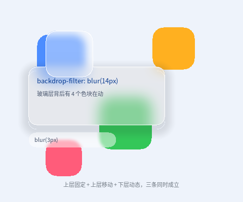

毛玻璃叠在动的背景上

完整程序：example/15_backdrop/main.c
这一章只讲一件事：一个半透明 + 高斯模糊的层，压在另一个"正在动"的层上， 下面变了上面的模糊会不会跟着变。答案是会，而且是每帧跟着变、不用整屏重绘。
#card {
background-color: rgba(255, 255, 255, 0.42); /* 半透明：这一句不能少 */
backdrop-filter: blur(14px); /* 模糊"背后已经画好的内容" */
border-radius: 16px;
}
1. 它为什么天然"实时"
本库没有保留式场景图，backdrop-filter 的实现是就地把这块区域里已经画好的
像素糊一遍（CPU）或把帧缓冲里这块区域 blit 出来糊两趟再贴回去（GPU）。
所以"跟随下层变化"不是额外做的工作，而是"重画这一帧"的必然结果：
第 N 帧：画色块（新位置） → 画玻璃卡 → 取卡下面的像素 → 模糊 → 贴回
三层玻璃在本例里分别验证三件事：
| 元素 | 验证什么 |
|---|---|
#card（固定） |
色块从它底下穿过时，模糊内容跟着变 —— 实时跟随 |
#puck（自己也在动） |
模糊区域跟着玻璃层自己走（transform 平移会算进采样矩形） |
#pill（blur(3px)） |
小半径与 blur(14px) 的观感差别 |
2. 三个必踩的坑
2.1 玻璃层必须半透明
最常见的一句错话是"我写了 backdrop-filter 但没效果"。原因几乎总是：
#card { background-color: #FFFFFF; backdrop-filter: blur(14px); } /* ❌ */
模糊确实做了，紧接着元素自己那块不透明背景把它整个盖住了。写成
rgba(255,255,255,0.42) 才看得见背后的糊。
2.2 border-radius 缺口里会渗出方形模糊块
模糊是方框运算，元素却是圆角的。不做处理的话，圆角缺口里会渗出颜色 —— 那是模糊结果，它跑到了元素边框盒之外，CSS 里不该出现。
本库的做法是把模糊结果裁进圆角：CPU 侧只处理四个 corner×corner 角落
（先存原像素、糊完按圆角覆盖率混回去），GPU 侧沿用同一个 sdRoundBox SDF
把片元的 alpha 压到 0，两条后端语义一致。
对应的 API 是 ql_canvas_backdrop_blur_round() / ql_draw2d_backdrop_blur_round()；
ql_ui.c 会自动把 border-radius 传下去，所以写 CSS 的人不用管这件事。
2.3 下层用 @keyframes + transform，不要动 width/height
动画白名单只允许绘制属性（background* / opacity / transform / color /
border-* / border-radius / clip-path）。写 width 会直接构建期报错 ——
改尺寸意味着每帧重排，与本库"动画零重排"的红线冲突。
2.4 多块大小不同的玻璃叠在一起
GPU 侧的模糊用一块"只增不减"复用的中间纹理：先画的那块大玻璃会把它撑大， 之后的小玻璃直接复用这张更大的纹理。所以小玻璃只取左上角属于自己那一块 —— 这是实现细节，写 CSS 的人不用管，但它解释了一个曾经出现过的怪现象： 小玻璃里显示的是"大玻璃那块区域被压扁"的内容，看上去模糊位置对不上。
3. 脏区模式下也跟得上
ql_ui_consume_dirty() 交出来的脏区里，只要有一块与玻璃元素相交，
玻璃就会重新取"背后的像素"再糊一次。所以不需要为了毛玻璃关掉脏区优化。
有一个已知边界：如果下层的变化只覆盖玻璃元素的一小块，那么只有那一小块
被重新模糊 —— 模糊核够不到矩形外的邻居像素，边缘可能出现细接缝。
需要绝对干净时，把带 backdrop-filter 的元素整体当成脏区。
4. 代价
| 后端 | 一次 blur(r) 的代价 |
备注 |
|---|---|---|
| CPU | 4 趟（H/V × 2）扫描 + 两块临时缓冲，与面积 × r 相关 | 只在这块区域上发生 |
| GPU | 半分辨率 blit + 两趟 9 抽头 + 一次合成 | 基本可以当免费 |
r 被限制在 1~64px，写 blur(0) 或 blur(80px) 都是构建期报错
（明确失败优于半个正确）。
5. 跑起来看
./build/example/example_15_backdrop
./build/example/example_15_backdrop --size 320x280 # 窄窗口
./build/example/example_15_backdrop --frames 120 --dump /tmp/15.ppm
顺手记一条布局上的坑：本例把
position: relative直接放在#root上， 没有额外套一层#stage { height: 100% }。因为普通元素的height: 100%目前不会去解析父元素的百分比高度，多套一层会变成 0 高（overflow: hidden一裁，画面全空）。根元素自己相对视口，是确定高度，所以能直接用。